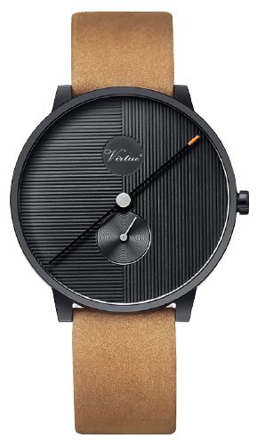

mor705
Watch
The watch also features a tough and durable sapphire a Swiss Sellita SW200-1 automatic winding movement that has a power reserve

Models

San22
The watch also features a tough and durable sapphire crystal glass
and comes with a Swiss SW200-1 automatic winding movement that has a
power reserve.

Sw12
The watch also features a tough and durable sapphire crystal glass
and comes with a Sw12-1 automatic winding
Product description
Inspired by the WWI trench watch, this timepiece has a contemporary design with an urban style and a vintage soul. The 22 Design Studio Concrete Sector Watch reinterprets the old timepiece with a concrete dial. Handmade in Taiwan, the dial is cast in one piece using the béton technique more detailed